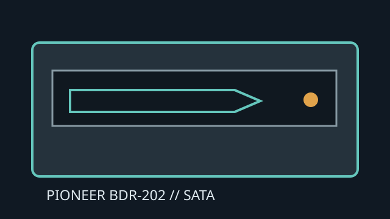

[ INTERNAL BLU-RAY WRITER ]
Pioneer BDR-202
Early internal SATA Blu-ray Disc/DVD/CD writer. The maximum BD-R speed is modest by later standards, and supported media are limited to the formats listed by Pioneer.

IDENTIFICATION: Pioneer BDR-202; confirm exact BDR-202 label and firmware before using legacy media profiles.
Documented specifications
| Media read/write formats | Reads BD-ROM, BD-R/RE, DVD-ROM, DVD±R/RW, DVD±R DL, CD-ROM/R/RW. Writes BD-R and BD-RE, DVD±R/RW, DVD±R DL and CD-R/RW; this standard Blu-ray model is not a BDXL writer. |
|---|---|
| Maximum speeds | BD-R write up to 4×; BD-RE up to 2×; BD read up to 2×. DVD±R up to 8×, DVD±R DL approximately 2–2.4× by format, DVD±RW up to 4×; CD-R up to 24× and CD-RW up to 16×. |
| Interface and physical bay | Internal 5.25-inch half-height tray drive; Serial ATA (SATA 1.0A / 1.5 Gb/s class) data connection and SATA power. Fit a standard desktop bay with suitable mounting and front clearance. |
| Host and firmware compatibility | Needs an accessible SATA port, power lead and OS/driver stack that supports a SATA optical drive. Blu-ray playback requires compatible application software and codecs. Pioneer firmware and media tables are model-specific; do not cross-flash related models. |
Manufacturer and manual sources
- Pioneer BDR-202 operating instructionsProduct manual PDF with installation guidance and technical ratings.
- Pioneer BDR-202 manualOperating-instructions scan and indexed manual pages.
- Pioneer BDR-202 operating instructionsAdditional manual copy for this exact model.